CentOS7中Redis的安装与使用
一、检查环境
由于Rdis官方只提供了源码包，安装需要进行编译。而CentOS7自带的gcc版本为4.8.5，目前的Redis版本为6.0.5，直接编译安装会报错，所以需要升级一下gcc
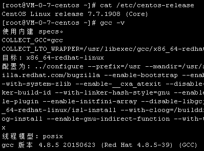
二、升级gcc
1、yum安装
先切换到/opt目录，依次执行以下命令
1 | yum install centos-release-scl |
途中会询问，输入y即可
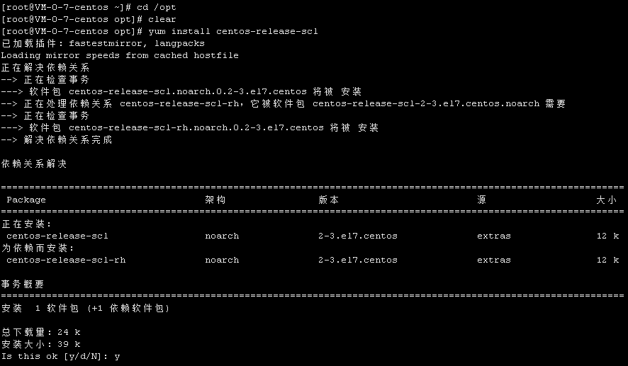

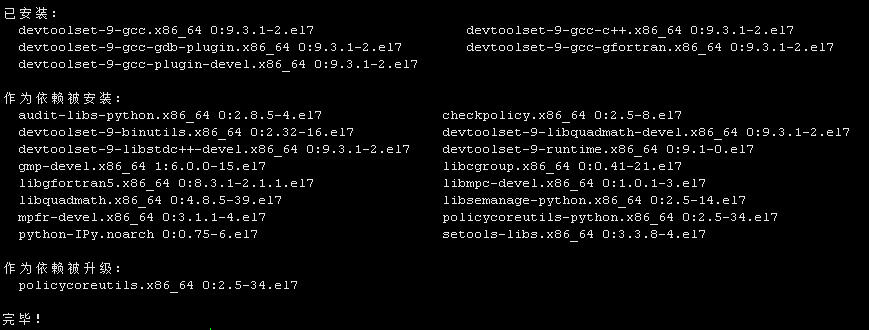
2、临时启用
执行scl enable devtoolset-9 bash以临时启用新安装的gcc，但是退出shell或重启系统会恢复为原来的gcc版本
3、长期启用
要长期有效需要配置在环境文件/etc/profeile里追加一行source /opt/rh/devtoolset-9/enable，然后source /etc/profeile使其生效，最后gcc -v检查版本
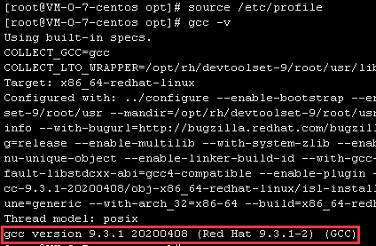
三、安装Redis
接下来就可以按照官网上的说明来编译安装Redis了
1、下载
1 | wget http://download.redis.io/releases/redis-6.0.5.tar.gz |
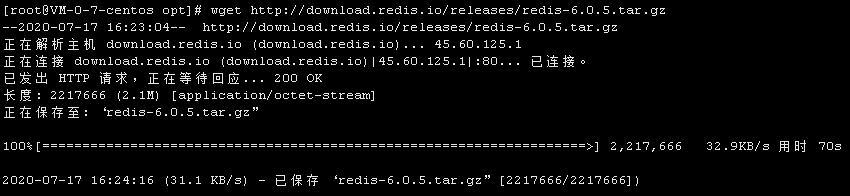
虽然只有2.1M，但几十KB/s的速度还是比较慢的，也可以选择自己下载后用FTP传上去
2、解压缩
1 | tar xzf redis-6.0.5.tar.gz |
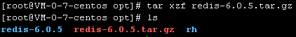
3、编译
1 | cd redis-6.0.5 |
此过程比较漫长，大概需要2分钟（1核2G服务器）
4、启动
在redis-6.0.5目录下执行src/redis-server即可，此时是前台运行状态
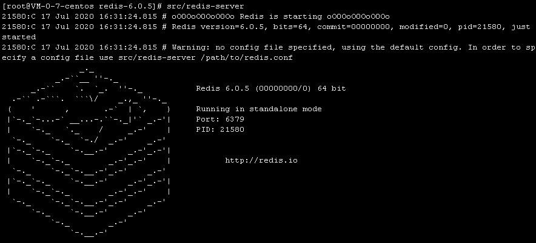
5、安装
执行make install将src下编译好的文件安装到当前系统，就不用每次都去源码包下运行了
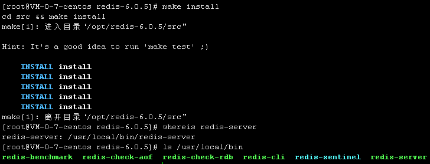
安装后的路径在/usr/local/bin里
6、配置守护进程(后台运行)
复制一份配置文件过去，不在默认的文件上修改
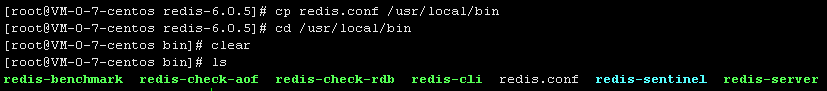
在206行的位置，把no改为yes，上面的注释说：默认Redis不是以守护进程运行的，如果需要的话使用yes来开启，同时Redis会写入pid文件在/var/run/redis.pid
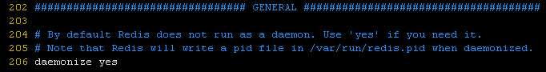
此时启动Redis，记得添加配置文件为参数。然后启动redis-cli客户端程序，使用ping命令验通（默认链接127.0.0.1:6379）
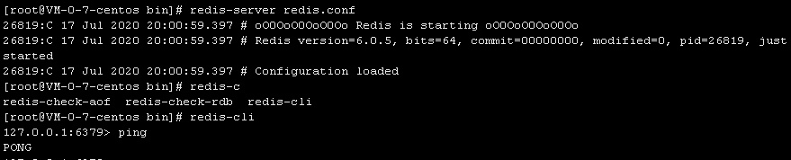
检查进程
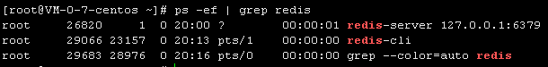
7、关闭
在客户端执行shutdown命令关闭redis，exit退出客户端
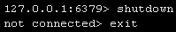
再次检查进程，服务端与客户端均已关闭
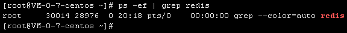